クラッチ ロックアップ モデルの作成
この例では、Simulink® を使用して回転クラッチ システムをモデル化およびシミュレートする方法を示します。 ロックアップ時にシステム ダイナミクスにおいてトポロジーが変化するため、クラッチ システムのモデル化は困難ですが、この例題では、Simulink の Enabled Subsystem がこのような問題をいかに簡単に処理できるかを示します。 クラッチ シミュレーションの作成において重要な Simulink モデル化概念を採用する方法を説明します。 設計者は、動的に変化する可能性がある強い不連続性と制約を伴う多くのモデルにこうした概念を適用できます。
このデモでは、Enabled Subsystem を使用してクラッチ モデルを作成します。 2 つの Enabled Subsystem がロック位置またはロック解除位置のいずれかでクラッチ ダイナミクスをモデル化します。 シミュレーションの実行後に、GUI が開きます。 GUI 上のボックスのいずれかをチェックすると、(時間に対して) 選択された変数のいずれかのプロットが生成されます。
Enabled Subsystem ではなく、If/Else ブロックを使用する代替クラッチ モデル (sldemo_clutch_if.mdl) があります (他のクラッチ モデルを開く)。
目次
解析と物理学
この例題のクラッチ システムは、エンジンとトランスミッション間でトルクを伝達する 2 つのプレートで構成されています (図 1 を参照)。 次の 2 つの異なる動作モードがあります。
1) 滑り - 2 つのプレートが異なる角速度を持ちます。
2) ロックアップ - 2 つのプレートが一緒に回転します。
これら 2 つのモード間の遷移を処理することは、モデル化の困難な課題となっています。 システムはロックアップ時に 1 つの自由度を失うため、伝達されたトルクはステップ不連続点を通過します。 トルクの大きさは、摩擦力でサポートされる最大値から、システムの 2 つの部分を同じ速度で回転させ続けるために必要な値に減少します。 クラッチ プレートによって伝達されるトルクが摩擦力を超えるため、逆遷移、つまり、分解も同様に困難です。
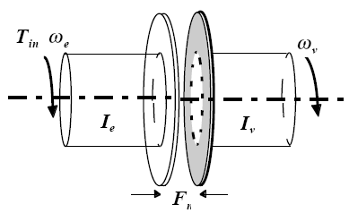
図 1: 集中定数モデルを使用して解析されたクラッチ システム
使用される変数
次の変数は、解析とモデル化に使用されます。
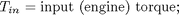
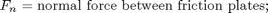
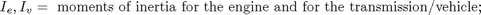
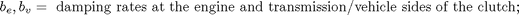
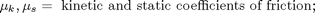
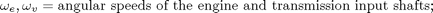
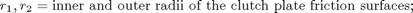
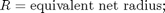
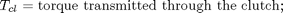
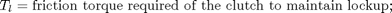
方程式 1
連結システムの状態方程式は次のように導出されます。

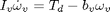
方程式 2
クラッチのトルク容量は、そのサイズと摩擦特性、加えられる垂直抗力の関数です。
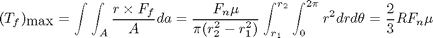
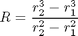
方程式 3
クラッチが滑っている場合、このモデルは動摩擦係数を使用するため、滑り方向と反対の方向に、全容量が利用可能です。
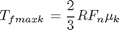

方程式 4
クラッチがロックされている場合、エンジンおよびトランスミッションの入力シャフトの角速度は同じであるため、システム トルクは単一ユニットとして結合した慣性に従って動作します。したがって、微分方程式 (方程式 1) を組み合わせて、ロック状態に対する単一方程式にします。
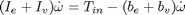
方程式 5
方程式 1 と方程式 4 を解くと、ロック時にクラッチによって伝達されるトルクは次のようになります。
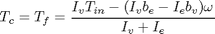
方程式 6
Tf の大きさが静摩擦力 Tfmaxs を超えない限り、クラッチはロックされたままになります。
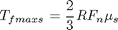
図 2 の状態図は、クラッチの全体的な動作を記述しています。
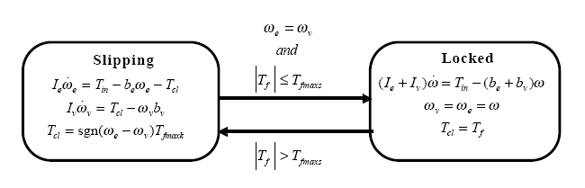
図 2: 摩擦モードの遷移を記述する状態図
モデル化
このタイプの問題を解決するには、次の 2 つの方法があります。
1) 常時伝達されるクラッチ トルクを計算し、モデルで直接この値を使用する
2) 2 つの異なる動的モデルを使用し、適切なタイミングでそれらを切り替える
その総合的な機能のため、Simulink は両方の方法をモデル化できます。この例題では、2 番目の方法のシミュレーションについて説明します。2 番目の方法では、新しいモデルの初期化状態が切り替え直前の状態値と一致するように、2 つの動的モデルの切り替えは慎重に行わなければなりません。ただし、いずれの方法でも、Simulink は、ロックアップと滑り間の遷移が発生する正確な瞬間を認識できるため、正確なシミュレーションを容易にします。
クラッチ システムのシミュレーション モデルでは、Simulink の特に便利な機能である Enabled Subsystem を使用します。シミュレーションでは、クラッチが滑っている場合に一方のサブシステムを使用でき、クラッチがロックされている場合に他方のサブシステムを使用できます。Simulink モデルのブロック線図を図 3 に示します。
- モデルを開き、シミュレーションを実行
このモデルを開くには、MATLAB® 端末に sldemo_clutch と入力します (MATLAB ヘルプを使用している場合は、ハイパーリンクをクリックします)。
モデルが開いたら、モデル ツール バーの [再生] ボタンを押してシミュレーションを実行します。
- メモ:MATLAB ヘルプを使用している場合、デモ ページからコードを実行するには、そのコードを選択して F9 キーを押します。コードを選択して右クリックし、[選択を評価] を選択することもできます。
図 3: クラッチ モデルの最上位レベルのブロック線図
- メモ:このモデルは、MATLAB ワークスペースの sldemo_clutch_output という構造体に関連データのログを作成します。ログを作成する信号は青色のインジケーターを持ちます (モデルを参照)。信号ログの詳細は、Simulink ヘルプを参照してください。
- Unlocked サブシステム
モデル ウィンドウで Unlocked サブシステムをダブルクリックしてこれを開きます。このサブシステムは、摩擦トルクによって連結される、クラッチの両側をモデル化します。これは、エンジン速度と車両速度を計算する積分器ブロックの周りに作成されます (図 4 を参照)。このモデルはゲイン、乗算および加算ブロックを使用して、状態と、エンジン トルクのサブシステム入力 Tin、クラッチ容量 Tfmaxk から速度導関数 (加速度) を計算します。
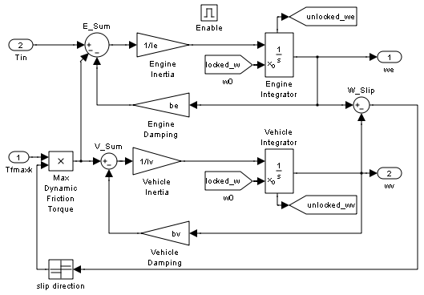図 4: Unlocked サブシステム
Unlocked などの Enabled Subsystem には、他にもいくつか注目すべき特性があります。図 4 のブロック線図の上部にある Enable ブロックは、モデルを Enabled Subsystem として定義します。Enabled Subsystem を作成するには、他のサブシステムと同じようにブロックをグループ化します。次に、Simulink Connections ライブラリから Enable ブロックを挿入します。これは、以下のことを意味します。
- Enable 入力がサブシステム ブロック上に表示され、Enable ブロック自体で使用されるパルスの形をした記号で識別されます。
- このサブシステムが実行されるのは、Enable 入力時の信号が 0 より大きい場合だけです。
この例題では、Unlocked サブシステムが実行されるのは、監視システム ロジックが、このサブシステムを有効にすべきであると判断した場合だけです。
有効または無効にできるシステムを使用する場合に重要な考慮事項がもう 1 つあります。システムが有効になると、正しい点からシミュレーションを開始できるように、シミュレーションは積分器を再初期化しなければなりません。この場合、クラッチがロック解除された瞬間にクラッチの両側が同じ速度で移動しています。休止中であった Unlocked サブシステムは、その速度で両方の積分器を初期化して、システム速度を連続した状態に保つ必要があります。
このシミュレーションは From ブロックを使用して、ロック速度の状態を 2 つの積分器の初期条件入力に伝達します。各 From ブロックは、それ自体とシステム内の別の場所にある Goto ブロックとの間の非表示の接続を表しています。Goto ブロックは積分器の状態端子に接続して、接続線を明示的に描画しなくても、モデルがシステム内の別の場所でこれらの状態を使用できるようにします。
- Locked サブシステム
モデル ウィンドウで Locked サブシステムをダブルクリックしてこれを開きます。これは、クラッチ モデルのもう 1 つの Enabled Subsystem です (図 5 を参照)。このサブシステムは単一の状態を使用して、エンジン速度と車両速度を表します。加速度を速度と入力トルクの関数として計算します。Unlocked の場合と同様に、From ブロックは積分器初期条件を提供し、Goto ブロックは、モデル内の別の場所で使用できるように状態をブロードキャストします。シミュレーション中、Locked サブシステムまたは Unlocked サブシステムのいずれかが常にアクティブになります。コントロールが変更されるたびに、状態は 2 つのサブシステム間で適切に引き渡されます。
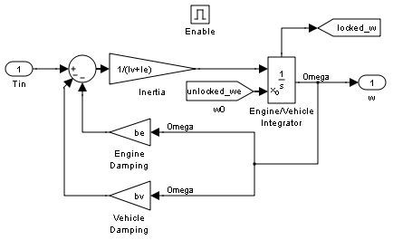図 5: Locked サブシステム
- Friction Mode Logic サブシステム
Friction Mode Logic サブシステム (図 6 に示す) は、次の式に従って、(適切な摩擦係数を使用して) 静摩擦と動摩擦を計算します。
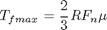
モデル ウィンドウで Friction Mode Logic サブシステムをダブルクリックしてこれを開きます。
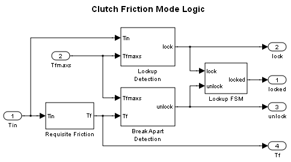図 6: Friction Mode Logic サブシステム
- その他のコンポーネント
残りのブロックは、ロックアップに必要なトルクを計算し (方程式 5)、図 2 に記述されているロジックを実装します。1 つの重要な要素が、Friction Mode Logic サブシステム内の Lockup Detection サブシステムにあります。これは、クラッチの滑りが 0 に到達した瞬間を正確に検出する Simulink Hit Crossing ブロックです。このブロックはモード遷移を正確な瞬間に配置します。
- システム入力
システム入力は、垂直抗力 Fn と、エンジン トルク Tin です。それぞれ、モデル ワークスペースの行列表で表されます。入力を図 7 にプロットします。さまざまな信号を可視化するには、Clutch Demo Signals GUI で対応するボックスをチェックします。
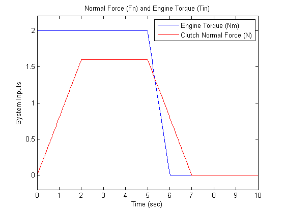図 7: システム入力:垂直抗力とエンジン トルク
- 結果
次のパラメーター値は、シミュレーションのデモンストレーションに使用されます。これらは、実際のシステムに対応する物理量を表すことを意図しているのではなく、意味のあるベースライン デモを容易にすることを意図しています。
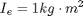
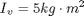
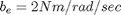
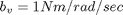
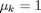
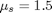
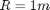
上に示した入力の場合、システム速度は、下の図 8 に示すように動作します。シミュレーションはロック解除モードで開始し、車両側がその大きな慣性を加速すると、初期エンジン速度はフレアします。約 t = 4 秒で、速度が一緒になり、ロックされたままになります。これは、クラッチ容量がトルクを伝達するのに十分であることを示しています。t = 5 秒で、エンジン トルクが減少し始めます。摩擦板に対する垂直抗力も同様です。その結果、エンジン速度と車両速度の分離で示されているように、滑りの開始は約 t = 6.25 秒で発生します。
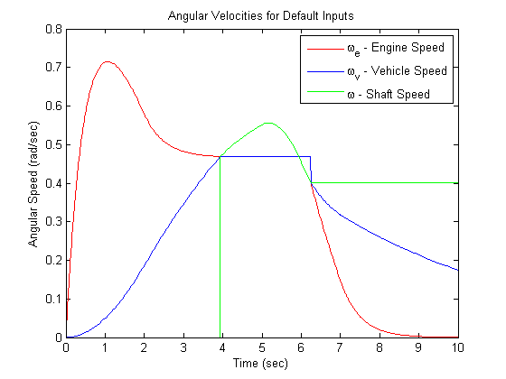図 8:既定入力の場合のエンジン、車両およびシャフトの角速度
無効な間、さまざまな状態が一定のままであることに注目してください。遷移が発生した瞬間に、状態の引き渡しが連続的かつ円滑に行われます。これは、状態が有効になったときに使用する適切な初期条件を各積分器に供給した結果です。
モデルを閉じる
モデルを閉じます。生成されたデータをクリアします。
まとめ
この例題では、Simulink とその標準ブロック ライブラリを使用して、トポロジー的不連続性を伴うシステムをモデル化し、シミュレートし、解析する方法を示しました。これは、Hit Crossing ブロックと、これを使用してシミュレーション中に特定のイベントをキャプチャする方法の強力なデモです。このクラッチ システムの Simulink モデルは、同様の特性を持つモデルを作成する際のガイドとして機能します。この例題で使用した原理を、トポロジー的不連続性を伴う任意のシステムに適用できます。